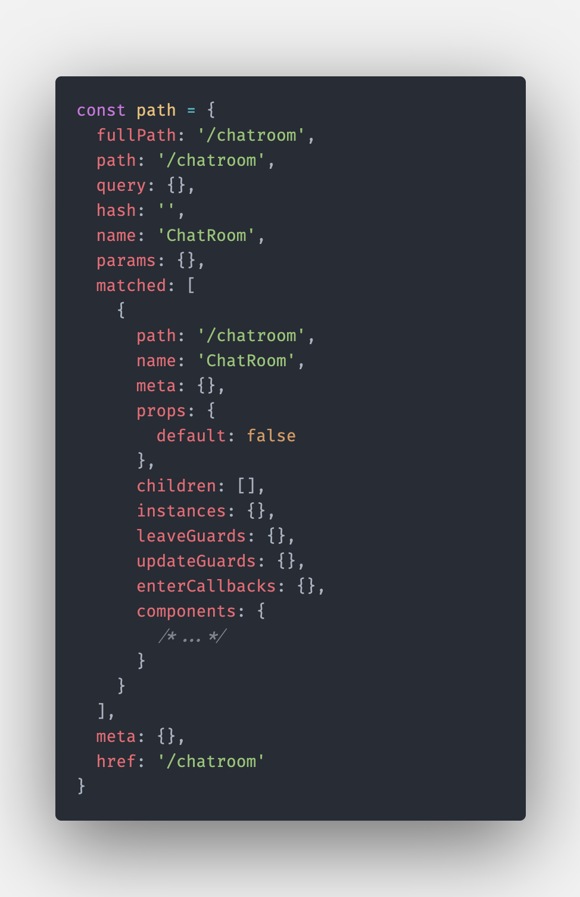

權限管理很重要。
簡述
有時候我們會希望「某些路由」必須「符合條件」才可以進入，例如說像這樣的路由：
1 | const routes: Array<RouteRecordRaw> = [ |
可以大概看出這是一個簡單的聊天室，不過我希望 /chatroom 只能給「已經登入的人」進入，沒登入的話我想把它導回首頁去，那麼我可以這樣做：
1 | const routes: Array<RouteRecordRaw> = [ |
這邊用到了 beforeEnter 這個 hook，說穿了就只是一個 function，Vue 會在「進入路由之前」幫你 trigger 他，讓你能夠在進入前做某些事。
錯誤知識補充
我原本以為 next 的部分可以這樣子寫：
1 | next(currentUser ? to : from) |
但這樣是不對的，會陷入無限迴圈。
如果你只是想讓他「到他原本該去的地方」，請直接呼叫 next() 就好，不需要再額外帶參數進去。因為帶了參數就會被視為「重新導向」，變成這樣的流程：
- 檢查 currentUser，有的話導向
/chatroom - 執行進入
/chatroom前的beforeEnter - 檢查 currentUser，有的話導向
/chatroom - 執行進入
/chatroom前的beforeEnter - …
以上補充內容就到這邊，接著來繼續介紹。
只要是路由相關的 hook 都會自動接收 to、from 和 next 這些參數。
to 和 from 分別為「目的地」和「出發地」的物件，內容大概長這樣：

附註：這是把 to 印出來的結果
簡單來說就是路由相關的資訊，有時候你可能會用到它來做判斷。
至於 next 就不一樣了，他是一個 function，用來決定「最後要跳轉去哪裡？」，如果沒有呼叫他的話就不會做任何事情，停留在原地一動也不動。
所以我們一開始的例子就只是做了以下幾件事：
- 檢查
currentUser有沒有值？ - 有的話，把他導向至
to的位置（/chatrrom） - 沒有的話，把他導向至
from的位置（/）
這樣一來就可以避免掉「沒登入的人」進到聊天室了！